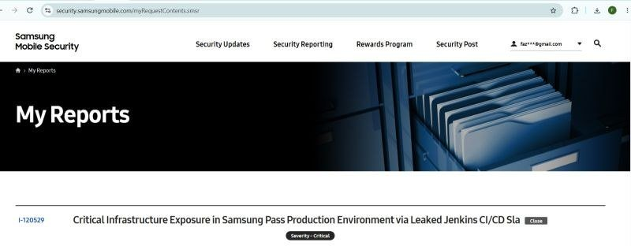

Samsung Pass
CriticalBroken access control → exposed CI/CD credential → broken auth
A broken access-control flaw exposed internal environment secrets, including a Jenkins CI/CD Slack bot token that was then accepted as an authorized internal integration. That granted admin-level access to sensitive operational channels and visibility into a significant portion of the platform's infrastructure. Responsibly disclosed on a system handling biometric data for millions of devices.

Report I-120529 · Samsung Mobile Security portal · Critical · $10,000 reward
$10,000
Bounty